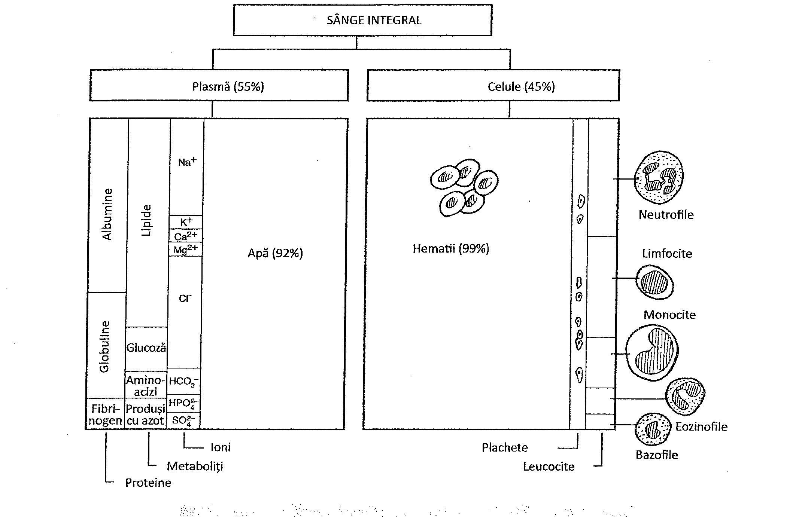
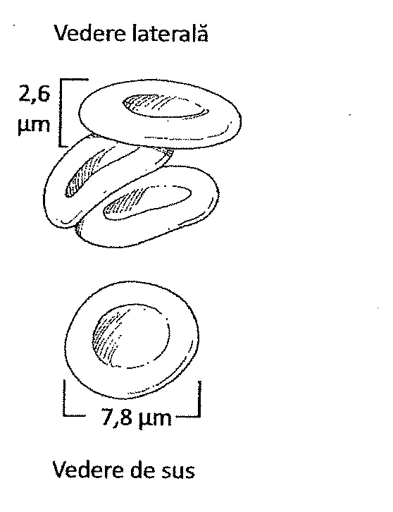
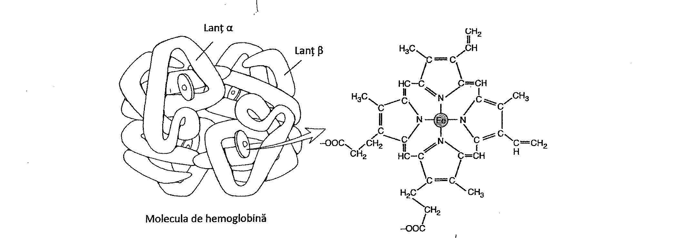
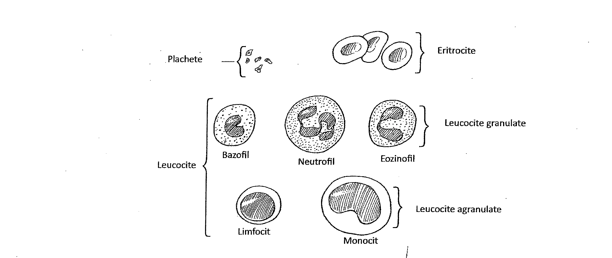
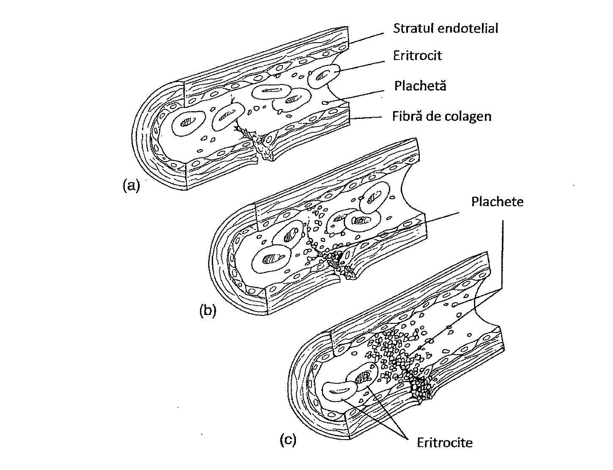
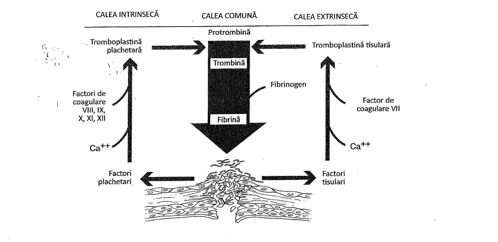

14.1. Funcțiile sângelui
Sângele este unul dintre țesuturile conjunctive ale organismului. Sângele transportă oxigenul de la plămâni la celule și dioxidul de carbon rezultat din metabolismul celular la plămâni. Celulele sanguine protejează organismul de boli, prin recunoașterea și distrugerea microorganismelor și a moleculelor străine din fluxul sanguin. Unele componente ale sângelui transportă produșii de metabolism de la celule la rinichi; altele transportă nutrienți de la nivelul tractului digestiv la celule, sau hormoni în întreg organismul.
Sângele conține elemente figurate precum globule roșii, globule albe și fragmente celulare (plachete), suspendate într-un fluid apos, de culoare gălbuie, numit plasmă (Figura 14.1). La o persoană cu greutate medie, sângele reprezintă aproximativ 8% din greutatea corporală. Sângele este mai vâscos decât apa și în mod normal are un pH cuprins între 7,35 și 7,45.

14.2. Plasma
Plasma reprezintă partea fluidă a sângelui. Ea conține aproximativ 92% apă, 7% proteine și 1% ioni ca sodiu, calciu, bicarbonat, clor și potasiu. Plasma conține, de asemenea, produși de degradare rezultați din metabolismul celular, precum și hormoni, nutrienți, gaze dizolvate și proteine cu rol în coagulare. După coagularea sângelui și consumarea proteinelor de coagulare din plasmă, rămâne un fluid care se numește ser. Serul este de obicei folosit pentru studii imunologice și ca sursă de anticorpi pentru terapia imună.
Proteinele plasmatice
Proteinele plasmatice sunt de trei tipuri: albumine, globuline și fibrinogen (Tabelul 14.1 prezintă, pe scurt, aceste proteine și alte componente ale sângelui). Albuminele mențin presiunea osmotică a sângelui și contribuie la vâscozitatea acestuia. Ele sunt parțial responsabile pentru menținerea unui anumit pH sanguin. Albuminele transportă, de asemenea, acizi grași și hormoni.
Globulinele reprezintă aproximativ 40% din totalul proteinelor plasmatice. Un grup de globuline numit gama globuline sunt molecule de anticorpi produse de către sistemul imun ca parte a răspunsului imun. Aceste molecule se combină în mod specific cu substanțele care au stimulat formarea lor (antigene); ele reprezintă un mecanism primar al apărării organismului. Alte globuline, cunoscute ca alfa și beta globuline, leagă hormoni, vitamine și alte substanțe din fluxul sanguin pentru a le transporta.
Aproximativ 7% din proteinele plasmatice sunt reprezentate de un produs al ficatului numit fibrinogen. Împreună cu alte proteine, fibrinogenul este implicat în procesul de coagulare, proces ce va fi discutat ulterior în acest capitol.
Proteinele plasmatice rămân în general în fluxul sanguin, deoarece ele nu pot traversa cu ușurință pereții capilarelor sanguine. În circulație, ele favorizează osmoza moleculelor de apă din fluidele tisulare în fluxul sanguin (Capitolul 21).
| Componente | Exemple |
|---|---|
| Apă | |
| Ioni | Sodiu, potasiu, calciu, magneziu, clor, bicarbonat |
| Proteine plasmatice | Albumine, globuline, fibrinogen |
| Celule sanguine (Elemente figurate) | Globule albe, globule roșii, plachete |
| Substanțe transportate în sânge | Zaharuri, aminoacizi, acizi grași, glicerol, hormoni, compuși azotați de degradare, dioxid de carbon, oxigen |
14.3. Globulele roșii
Globulele roșii mai sunt cunoscute și sub numele de hematii sau eritrocite. Rolul lor principal în organism este să transporte oxigenul, funcție realizată de un pigment, numit hemoglobină, conținut în citoplasma lor. Globulele roșii nu sunt celule adevărate, deoarece au o organizare internă redusă, nu au nucleu sau organite. Ele sunt pur și simplu niște saci plini cu hemoglobină, și din acest motiv sunt uneori numite corpusculi roșii. Totuși, ne vom referi la ele ca fiind celule, deoarece în mod tradițional au fost denumite astfel.
Morfologie, număr și producere
Un bărbat adult are aproximativ 5,4 milioane de globule roșii pe microlitru (milimetru cub) de sânge. O femeie are aproximativ 4,8 milioane pe milimetru cub de sânge. Fiecare hematie este un disc biconcav (mai subțire în centru decât la margini), flexibil, ale cărui dimensiuni sunt prezentate în Figura 14.2.
O modalitate simplă de a determina proporția lor în sângele integral este centrifugarea într-un tub îngust. Globulele roșii, fiind mai grele datorită conținutului în fier, se sedimentează în partea de jos a tubului. Procentul de hematii din volumul tubului este hematocritul. Bărbații au de obicei un hematocrit mai mare, de aproximativ 47%. Femeile au de obicei un hematocrit mai mic, de aproximativ 42%.
În soluții mai concentrate, globulele roșii scad în dimensiuni. Acest lucru se întâmplă deoarece, prin osmoză, apa iese din celule în direcția concentrației mai mari de substanțe dizolvate. Acest fapt va duce la micșorarea sau zbârcirea globulelor roșii. Când sunt plasate într-o soluție cu concentrație mai mică decât cea normală, celulele se vor umfla. Creșterea în volum apare deoarece prin osmoză apa trece rapid în celule, în direcția concentrației mai mare de solvit. Globulele roșii se sparg și eliberează hemoglobina printr-un proces numit hemoliză.

Globulele roșii sunt produse în măduva roșie osoasă. Procesul de formare a globulelor roșii se numește eritropoieză. Acest proces începe de la niște celule numite hemocitoblaști (celule stem). Procesul de formare a globulelor roșii este complex, iar celulele trec prin stadii multiple, înainte să devină globule roșii mature. În acest proces, hemoglobina se acumulează în citoplasmă, iar nucleul, organitele și alte componente celulare dispar. Globulele roșii mature intră în capilarele măduvei osoase, strecurându-se prin peretele acestora.
Producția de globule roșii este reglată în parte de hormonul numit eritropoetină. Eritropoetina este secretată de celule renale, atunci când acestea nu primesc destul oxigen. Aceasta reprezintă o parte importantă a adaptării organismului la altitudini mari, unde conținutul de oxigen al aerului este mai mic.
Hemoglobina
Hemoglobina este un pigment de culoare roșie, alcătuit din patru lanțuri polipeptidice, care leagă oxigenul. Două din lanțurile polipeptidice se numesc lanțuri alfa, iar celelalte două, lanțuri beta. Fiecare lanț este alcătuit din aproximativ 150 de molecule de aminoacizi.
Fiecare lanț polipeptidic al moleculei de hemoglobină este atașat unei grupări hem. Această grupare conține un atom de fier (Figura 14.3). Moleculele de oxigen se leagă slab de ionul de fier din porțiunea hem a moleculei de hemoglobină, pentru a forma oxihemoglobina. Deoarece o moleculă de hemoglobină are patru grupări hem, aceasta poate transporta patru molecule de oxigen. Fluxul oxigenului spre globulele roșii la nivel pulmonar se face prin difuziune. Hemoglobina transportă de asemenea o cantitate mică de dioxid de carbon (cea mai mare parte este transportată sub forma ionilor de bicarbonat, după cum se va vedea în Capitolul 21). Hemoglobina combinată cu dioxid de carbon se numește carbaminohemoglobină.
Monoxidul de carbon este un gaz toxic. Moleculele gazului se combină rapid cu ionii de fier ai hemoglobinei și se leagă puternic de moleculă. Prin ocuparea spațiului rezervat oxigenului, printr-o legătură mai puternică decât cea cu oxigenul, moleculele de monoxid de carbon reduc cantitatea de oxigen transportată de hemoglobină și pot cauza moarte prin lipsă de oxigen.

Distrugerea globulelor roșii
Globulele roșii circulă în sânge aproximativ 120 de zile. Celulele îmbătrânite și cele deteriorate sunt înghițite și distruse de celulele fagocitare (macrofage) în splină, ficat și măduva osoasă. Lanțurile polipeptidice sunt desfăcute pentru a elibera aminoacizii, care pot fi refolosiți pentru noi sinteze proteice; fierul eliberat din hemoglobină este adus în măduva osoasă pentru noi sinteze de hemoglobină; orice exces de fier este stocat în ficat (Capitolul 18).
Restul hemului din hemoglobină este transformat într-un pigment verzui numit biliverdină. Mai departe, biliverdina este convertită într-un pigment galben-portocaliu numit bilirubină. Bilirubina este transportată de la splină la ficat și este excretată în bilă. (Capitolul 18). Când bila ajunge în intestin, bacteriile florei intestinale convertesc o parte din bilirubină în urobilinogen, care determină culoarea materiilor fecale. O parte din urobilinogen este reabsorbită și transportată înapoi la ficat și apoi intră în circulația generală. În cele din urmă, acesta ajunge la rinichi, unde determină culoarea urinei. Aceste modificări de culoare pot fi observate la nivelul pielii, urmărind o echimoză care trece prin toate etapele de vindecare.
14.4. Grupele sanguine
Suprafața membranei globulelor roșii conține una, ambele sau nici una dintre moleculele proteice cunoscute sub numele de antigene (Figura 14.4). Cele două antigene sunt denumite A și B. În funcție de antigenele prezente pe suprafața eritrocitelor, o persoană poate avea grupa de sânge A (este prezent doar antigenul A), grupa de sânge B (este prezent doar antigenul B), grupa de sânge AB (sunt prezente ambele antigene, A și B) sau grupa de sânge 0 (niciun antigen). Antigenele nu au aparent nicio semnificație pentru fiziologia organismului.
În plus față de antigenele eritrocitare, o persoană are de asemenea în ser anticorpi de grup sanguin. O persoană cu grupa A are în ser anticorpi anti-B; o persoană cu grupa B are anticorpi anti-A; o persoană cu grupa AB nu are anticorpi, nici anti-A, nici anti-B; o persoană cu grupa 0 are atât anticorpi anti-A, cât și anticorpi anti-B. Ca și în cazul antigenelor de grup sanguin, acești anticorpi nu au aparent nicio semnificație fiziologică.
![Grupele de sânge și testarea sângelui. (a) Cele patru grupe de sânge sunt indicate cu tipurile de antigene și de anticorpi întâlnite în fiecare grup. Tipul grupei este același cu cel al antigenelor găsite la suprafața eritrocitelor. (b) Când se amestecă sângele în timpul transfuziilor de sânge, este foarte important ca antigenele și anticorpii de același tip să nu intre în contact în circulația primitorului. Dacă acest lucru se întâmplă, va avea loc o reacție, așa cum este prezentat în figură. Agregarea și distrugerea globulelor roșii (hemoliza) pot fi fatale.](assets/images/chapters/sangele/figura-14-4.webp)
În cazurile de urgență, unde este necesară transfuzia de sânge, transfuzia se poate realiza atâta timp cât se iau în considerare antigenele prezente în sângele donatorului și anticorpii prezenți în serul primitorului. Pentru a evita un incident transfuzional sever, antigenele și anticorpii de același tip nu trebuie să se întâlnească. De exemplu, dacă donatorul are grupa A și primitorul grupa AB, transfuzia poate fi făcută deoarece donatorul prezintă în ser antigene A, iar primitorul nu are anticorpi anti-A în ser. Dacă donatorul ar avea grupa AB și primitorul grupa B, transfuzia nu trebuie făcută, deoarece donatorul AB are și antigene A pe suprafața eritrocitelor, iar primitorul are în ser anticorpi anti-A. Dacă cele două tipuri de sânge ajung în contact, globulele roșii se vor agrega și vor hemoliza, putând cauza o reacție transfuzională letală. Despre o persoană cu grupa de sânge 0 se spune că este donator universal, deoarece nu are nici antigene A și nici B pe suprafața eritrocitelor, iar donările pot fi făcute la persoane cu alte grupe sanguine. Despre o persoană care are grupa de sânge AB se spune că este primitor universal, deoarece nu are nici anticorpi anti-A, nici anticorpi anti-B în ser, iar această persoană poate primi sânge de la celelalte trei grupe. Din punct de vedere tehnic, ideea de donator universal și de primitor universal este corectă. Totuși, pentru a reduce rata incidentelor transfuzionale, medicii vor realiza transfuzii doar cu tipul specific de sânge, singura excepție fiind totuși în cazurile de urgență.
Un alt antigen cu semnificație este antigenul Rh. Aproximativ 85–90% din populația americană, de exemplu, are acest antigen pe suprafața eritrocitelor și se spune că sunt Rh-pozitivi. Aproximativ 10-15% dintre americani nu au acest antigen, iar grupa de sânge în acest caz este Rh-negativă. Astfel, o persoană poate avea grupa de sânge A+, dacă are antigenul A și antigenul Rh; o persoană poate fi B-, dacă are antigenul B, dar nu are antigenul Rh. Antigenul Rh, ca și celelalte, nu pare să aibă semnificație pentru fiziologia normală a organismului.
Factorul Rh este important în afecțiunea cunoscută sub numele de eritroblastoză fetală sau boala hemolitică a nou-născutului. Afecțiunea apare când un bărbat Rh-pozitiv (ex. A+) devine tatăl unui copil cu mama Rh-negativă (ex. AB-). În acest caz, există posibilitatea ca fătul să aibă o grupă de sânge Rh-pozitiv (ex. A+ sau AB+).
În timpul nașterii, unele din celulele sanguine ale copilului pot să intre în circulația mamei și să stimuleze sistemul imun al mamei să producă anticorpi anti-Rh. Acești anticorpi nu produc de obicei niciun efect asupra copilului, dar rămân în sângele mamei. Dacă femeia va avea un al doilea copil, iar sângele copilului este Rh-pozitiv (ex. A+), anticorpii Rh vor intra în circulația celui de-al doilea copil, traversând placenta. Anticorpii vor reacționa cu antigenele Rh de pe suprafața eritrocitelor, iar reacția va duce la hemoliză excesivă, putând provoca deces.
Pentru a evita apariția unei boli hemolitice a nou-născutului, femeia cu Rh-negativ primește o injecție cu anticorpi anti-Rh (RhoGAM) în timpul sarcinii sau la nașterea primului copil. Anticorpii anti-Rh se combină cu antigenele Rh în circulație și le neutralizează. Acest lucru previne stimularea sistemului imun al mamei de către anticorpii Rh, și, în consecință, el nu va produce anticorpi anti-Rh. Astfel, în timpul sarcinii cu al doilea copil, anticorpii nu vor fi prezenți, iar hemoliza nu se produce. Femeia trebuie să primească o altă injecție cu RhoGAM după nașterea celui de al doilea copil, pentru a preveni producerea de anticorpi anti-Rh, care ar putea afecta al treilea copil.
14.5. Globulele albe
Globulele albe sanguine sunt denumite și leucocite (Tabelul 14.2). Funcția lor primară este să apere țesuturile împotriva infecțiilor și a substanțelor străine organismului. Un adult are aproximativ 7000 de leucocite pe milimetru cub de sânge.
Leucocitele de diferite tipuri se dezvoltă printr-un proces complex în măduva osoasă roșie. Toate leucocitele pătrund în circulație prin diapedeză, iar unele își termină procesul de maturare în altă parte. Leucocitele trăiesc câteva ore sau câteva luni, în funcție de tipul lor; multe leucocite părăsesc circulația tot prin diapedeză, pentru a se amesteca printre celulele tisulare.
| Leucocite | Aspect |
|---|---|
| Granulocite | |
| Neutrofile | Granulații citoplasmatice fine, de culoare albastră-violacee; nucleu cu 3–5 lobi |
| Eozinofile | Granulații citoplasmatice roșii, strălucitoare; nucleu cu 2 lobi (bilobat) |
| Bazofile | Granulații citoplasmatice mari, albastru-purpuriu închis; nucleu neregulat, frecvent în formă de S |
| Agranulocite | |
| Limfocite | Un strat subțire de citoplasmă albastră, fără granulații; nucleu mare, violet strălucitor |
| Monocite | Un strat gros de citoplasmă fără granulații; nucleu violet, în formă de rinichi (reniformi) sau potcoavă |
Tipurile de globule albe
Există două tipuri de globule albe: granulocitele și agranulocitele. Granulocitele au granulații în citoplasmă și includ neutrofilele, eozinofilele și bazofilele. Agranulocitele nu au granulații în citoplasmă și includ monocitele și limfocitele.
Neutrofilele reprezintă aproximativ 60% din totalul numărului de leucocite. Granulele lor se colorează cu coloranți neutri și au o culoare albastră-violacee. Nucleul neutrofilului are de obicei între doi și cinci lobi, iar celula adesea este numită leucocit polimorfonuclear. Funcția principală a neutrofilului este fagocitoza; neutrofilele se adună rapid la locul unei infecții.
Atât bazofilele cât și eozinofilele au granulații în citoplasmă: granulațiile bazofilelor se colorează cu coloranți bazici și apar albastre, în timp ce, granulațiile eozinofilelor se colorează cu coloranți acidofili și apar roșii (Figura 14.5). Fiecare tip de celulă reprezintă aproximativ 1% din totalul numărului de leucocite. Se consideră că ambele celule își îndeplinesc funcțiile în reacții alergice și în cursul inflamației.

Limfocitele nu au granulații în citoplasmă. Ele reprezintă aproximativ 30% din totalul leucocitelor și sunt de două tipuri: limfocite B și limfocite T. Limfocitele B sunt stimulate de antigenele microorganismelor în timpul răspunsului imun. Ele proliferează și devin plasmocite. Plasmocitele produc anticorpi, care intră în circulație și interacționeză cu microorganismele care au stimulat producerea lor. Interacțiunea duce în general la distrugerea microorganismului. Limfocitele B se află în sânge și în nodulii limfatici.
Limfocitele T se găsesc și ele în nodulii limfatici și în sânge. Înainte să ajungă în nodulii limfatici, celulele tinere se maturează în timus. Când sunt stimulate de antigene, limfocitele T pleacă din nodulii limfatici spre locul infecției, unde interacționează cu microorganismele și le distrug. Limfocitele B și T sunt celulele cheie ale sistemului imun (Capitolul 16) și, prin acest sistem, asigură apărarea organismului.
Monocitele reprezintă între 6 și 8% din totalul leucocitelor (Tabelul 14.3). Ele au un nucleu foarte mare, ce prezintă o depresiune pe una din margini. Monocitele se strecoară prin pereții capilarelor prin diapedeză și intră în mediul tisular, unde realizează fagocitoza microorganismelor. În țesuturi, monocitele se transformă în celule fagocitare mari, numite macrofage. Macrofagele inițiază răspunsul imun prin fagocitarea microorganismelor și prin prezentarea antigenelor conținute în aceste microorganisme, limfocitelor, în nodulii limfatici.
Examinarea populației leucocitare poate oferi o bună înțelegere a bolilor. De exemplu, un număr ridicat de globule albe poate indica o infecție bacteriană. În plus, poate fi importantă creșterea unei anumite categorii de leucocite. Aceste date sunt obținute prin numărarea diferențiată a leucocitelor. O reducere generală a numărului de leucocite se numește leucopenie, iar o valoare a leucocitelor deasupra mediei generale din populație se numește leucocitoză. Cancerul leucocitelor se numește leucemie. În leucemie întâlnim un număr foarte mare de leucocite, dar ele de obicei nu sunt funcționale și nu-și pot îndeplini funcția de apărare.
| Celule | Număr | Funcție | Rol în patologie |
|---|---|---|---|
| Globule roșii (Eritrocite) | Bărbați: 5,4 milioane/mm³; Femei: 4,8 milioane/mm³ | Transportul oxigenului; transportul dioxidului de carbon | Prea puține: anemie; Prea multe: policitemie |
| Plachete (Trombocite) | Aproximativ 300.000/mm³ | Esențiale pentru coagulare | Prea puține: tulburări de coagulare, sângerări, hematoame care se produc ușor |
| Globule albe (Leucocite) | Aproximativ 7000/mm³ | ||
| Neutrofile | Aproximativ 60% din totalul leucocitelor | Fagocitoză | Prea multe: infecții bacteriene, inflamații sau leucemie |
| Eozinofile | Aproximativ 1% din totalul leucocitelor | Posibil rol în răspunsul alergic | Prea multe pot să apară în reacții alergice, infestații parazitare |
| Bazofile | Aproximativ 1% din totalul leucocitelor | Posibil rol în răspunsul alergic | |
| Limfocite | Aproximativ 30% din totalul leucocitelor | Produc anticorpi; distrug celulele străine | Limfocite atipice apar în mononucleoza infecțioasă; prea multe pot să apară în leucemii |
| Monocite | 6–8% din totalul leucocitelor | Fagocitoză; se diferențiază în țesuturi pentru a forma macrofage | Pot crește în leucemia cu monocite, tuberculoză, infecții fungice |
14.6. Plachetele sanguine
Plachetele sanguine (numite și trombocite) sunt elemente ale sângelui produse în măduva osoasă. Practic, plachetele nu sunt celule, deoarece sunt alcătuite din fragmente de citoplasmă înconjurate de membrană. Ele se formează în măduva roșie osoasă din celule mari, numite megacariocite, derivate din hemocitoblaști. Din citoplasma megacariocitelor se desprind mici fragmente, care sunt delimitate de membrană și sunt apoi eliberate în circulație. Numărul lor este de aproximativ 300.000 pe milimetru cub de sânge.
Plachetele intervin în două procese importante: formează agregate plachetare (hemostază) și sunt implicate în mecanismul de coagulare a sângelui. Agregatele plachetare se formează la nivelul zonei lezate a vaselor de sânge, unde reacționează cu fibrele de colagen din peretele vascular (Figura 14.6). Plachetele aderă de fibre și formează o masă care umple leziunea din peretele vascular. Această reacție apare în câteva secunde de la leziunea vasculară și stimulează coagularea.

14.7. Coagularea sângelui
Formarea cheagului de sânge apare în cazul leziunilor mai mari suferite de vasele de sânge. Acest proces determină formarea unei mase de fibre proteice, celule sanguine și plachete, care repară leziunea suferită. Elementele implicate în coagulare se numesc factori de coagulare.
Când țesutul sau vasul de sânge este lezat, mecanismul de coagulare a sângelui este activat, fie pe calea intrinsecă, fie pe cea extrinsecă. Calea intrinsecă implică factori care se găsesc numai în sânge, pe când calea extrinsecă este inițiată de factori din afara fluxului sanguin.
În calea intrinsecă, un factor de coagulare denumit factor plachetar este eliberat de plachetele sanguine și de către celulele endoteliale care căptușesc vasele de sânge. Factorul interacționează cu ionii de calciu și cu mulți alți factori de coagulare, pentru a se obține tromboplastina derivată din plachete. Tromboplastina este o lipoproteină care activează o proteină globulară numită protrombină. În cursul reacției, protrombina este convertită la forma activă numită trombină. Ionii de calciu sunt esențiali pentru această conversie.
Protrombina poate fi activată și pe calea extrinsecă. În acest proces, factorii tisulari de la nivelul vaselor lezate sau de pe suprafața celulelor din tot organismul, reacționează cu factorul de coagulare VII și cu ionii de calciu și determină activarea acestuia (factorul VII). Factorul VII activează apoi alți factori de coagulare, pentru a forma tromboplastina tisulară. Împreună cu ionii de calciu și alți factori, tromboplastina formează activatorul protrombinei. Activatorul protrombinei convertește protrombina în trombină.
Odată ce trombina a fost produsă, ea va funcționa ca o enzimă. În prezența calciului, trombina activează proteina produsă de ficat numită fibrinogen, care se găsește dizolvat în plasmă. Activarea convertește fibrinogenul în fibrină, o proteină fibrilară, insolubilă (Figura 14.7). Filamente de fibrină se acumulează și, împreună cu plachetele și eritrocitele, formează cheagul de sânge. Plasma se gelifică la locul leziunii, apoi cheagul pierde lichidul conținut și se contractă. În timpul contracției, cheagul sudează capetele deteriorate ale vasului de sânge sau țesutului, iar cheagul se întărește. Filamente dense de fibrină se formează imediat, iar cheagul este complet.

Deși coagularea sângelui este esențială pentru o bună stare de sănătate, există situații în care cheagurile de sânge pot afecta organismul. De exemplu, se poate forma un cheag de sânge într-un vas rigidizat, prin depunerea unei plăci alcătuite din colesterol. Colesterolul, împreună cu alte lipide, se depune pe peretele interior al vaselor și cauzează o afecțiune numită ateroscleroză.
Plăcile de colesterol stimulează, de asemenea, formarea de cheaguri într-o afecțiune numită tromboză. Un cheag format astfel se numește tromb. Acesta poate împiedica fluxul sanguin în arterele coronare (Capitolul 15) și poate cauza afecțiunea numită tromboză coronariană. Când cheagul migrează în altă parte a organismului, el se numește embol, iar afecțiunea cauzată, embolie.